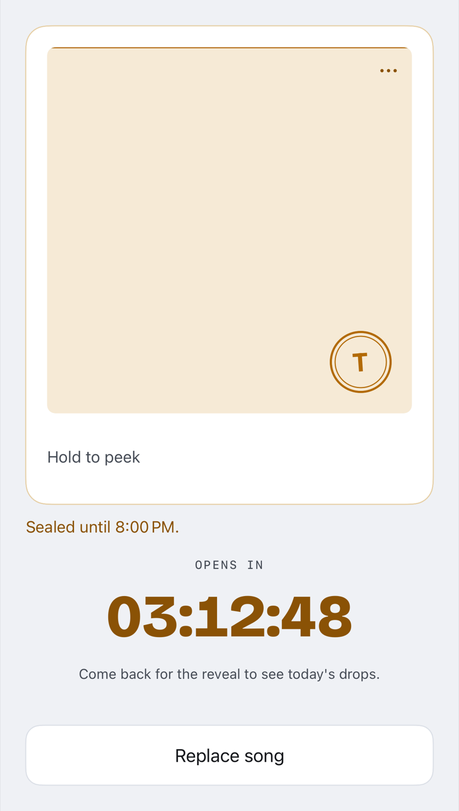

How well do you really know your friends?
A daily guessing game for you and your friends. Everyone drops a song before 8:00 PM, with no one knowing what anyone else picked. At 8:00 the songs come out as an anonymous list and you make your best guesses to work out who chose what.
Get the beta TestFlight · iPhone, iOS 17.4+
8:00 PM is just the default. Whoever runs your group can move it anywhere from 6 to 9 PM.

Your sealed drop. Hold to peek and listen to it privately, while nobody else can see it, and you cannot see theirs.
8:00 PM
Then everything opens at once
The songs arrive as an anonymous, numbered list. Then you play each song and try and figure out who's who. Get a taste of it below.
-
01
Sealed
Teardrop
Massive Attack Ivy -
02
Sealed
Cranes in the Sky
Solange Dev -
03
Sealed
Bike
Pink Floyd Ana -
04
Sealed
Little Dark Age
MGMT Bo -
05
Sealed
Alright
Kendrick Lamar Cass
That is the reveal. In the app you would now have two hours to name all five.
A round, end to end
Four steps, every day
-
Until 8
Drop a song
Search, find a good one, and seal it. You can't see anyone else's, not even if they've dropped or not.
-
8:00 PM
The reveal
Every song appears at once as an anonymous numbered list. Only people who dropped a song get to guess.
-
8–10 PM
Name them
Assign a person to each song and lock it in. Who do you really know?
-
10:00 PM
Answers
Who dropped what, who guessed right, and how unreadable you were. Every song joins the group's record, exportable to Apple Music or Spotify.
Beyond the round
See who actually gets you
Every round quietly builds a record of who reads who. Pull that up whenever you want and see who knows you best, who you're hardest to read for, and who barely ever guesses you right.
-
Best read
Who guesses you correctly the most. This is the person who just gets your taste.
-
You know them
Who you guess right the most. Turns out you've been paying attention.
-
Hardest to read
The person whose picks throw everyone off, most of all you.
-
Profiles
Tap anyone's name to see their numbers next to yours and figure out exactly how well you two actually know each other.
Install
It is in TestFlight
iPhone, iOS 17.4 or later. TestFlight is Apple's beta app, so install that first and Blind Drop lands inside it.